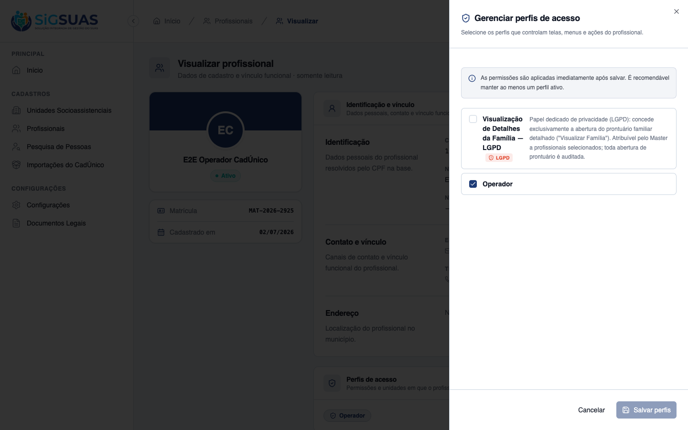
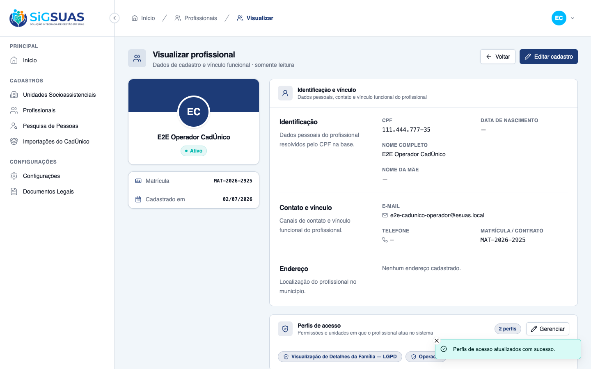
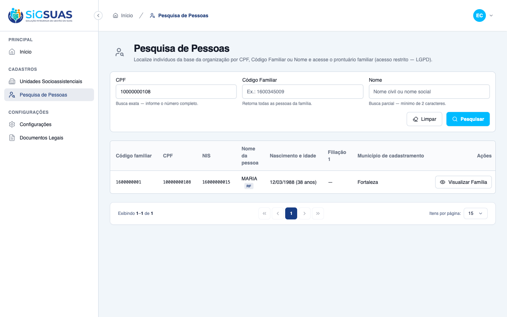
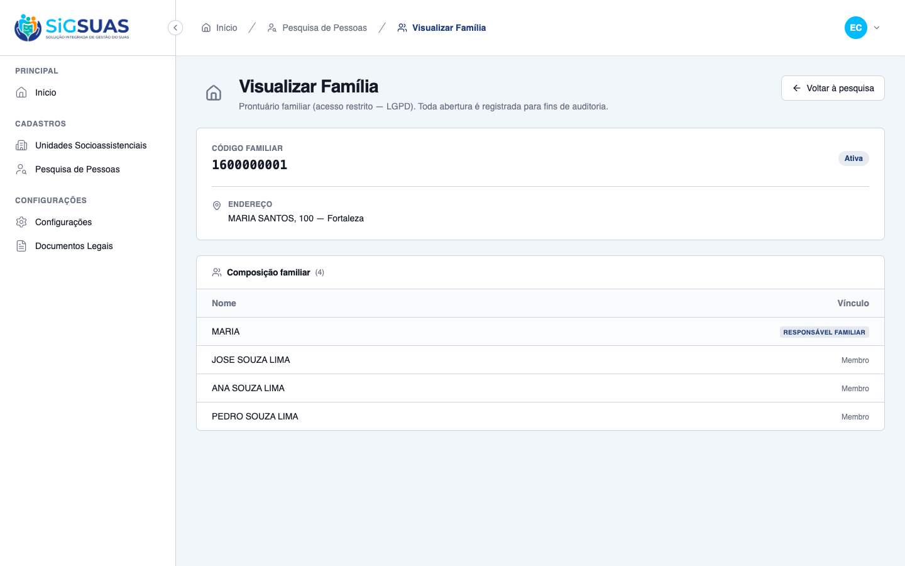
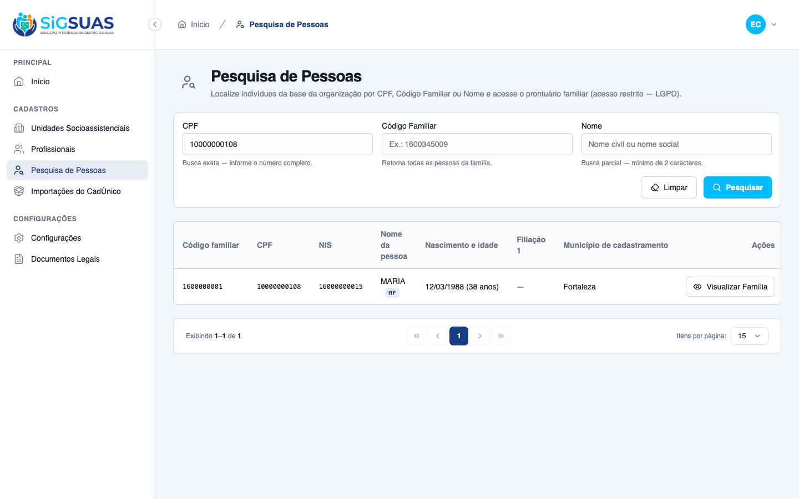

Relatório de Critérios de Aceite — Gerenciamento de Permissões de Privacidade (LGPD)
Resumo
HU #9761: 6 Critérios de Aceite evidenciados — CA07 (revogação em tempo real), CA-extra-A (concessão habilita), CA-extra-B (permissão não vaza aos papéis base) e CA-extra-C (Master acessa sempre por bypass) demonstrados ao vivo no navegador com duas sessões simultâneas; CA-extra-D (isolamento territorial da concessão) e CA-extra-E (inativação bloqueia de imediato) cobertos pela suíte automatizada. O drawer de perfis exibe o papel com selo vermelho LGPD e descrição de privacidade. A revisão de código desta etapa também blindou a hierarquia de postos contra papéis add-on empilhados (fix 38fd466, com testes dedicados). Suíte: 21 testes, 74 assertions, 100% verdes. Resultado geral: todos os critérios atendidos.
| CA | Critério | Status |
|---|---|---|
| GOV | Governança pelo Master — papel LGPD no drawer de perfis (RN01/RN08) | ATENDIDO · navegador |
| CA-extra-A | Concessão habilita o acesso (RN06) | ATENDIDO · navegador |
| CA07 | Revogação de acesso com efeito em tempo real (RN06) | ATENDIDO · navegador |
| CA-extra-B | Permissão não vaza para os papéis base (RN08) | ATENDIDO · navegador + automatizado |
| CA-extra-C | Master acessa sempre (RN04/bypass de papel) | ATENDIDO · navegador |
| CA-extra-D | Isolamento territorial da concessão (RN07) | ATENDIDO · automatizado |
| CA-extra-E | Inativação bloqueia de imediato (RN06) | ATENDIDO · automatizado |
GOV — Governança pelo Master — papel LGPD no drawer de perfis (RN01/RN08) ATENDIDO · navegador
Critério (Gherkin): Contexto dos CAs: o Master gerencia o papel "family_viewer" pelo drawer "Gerenciar perfis de acesso" do Profissional, onde o papel aparece com selo LGPD e descrição de privacidade.
Como foi testado: Login como Master E2E → Cadastros → Profissionais → Visualizar "E2E Operador CadÚnico" → card Perfis de acesso → Gerenciar.
- O drawer lista "Visualização de Detalhes da Família — LGPD" com selo vermelho LGPD e a descrição: papel dedicado de privacidade, concede exclusivamente a abertura do prontuário familiar detalhado, atribuível pelo Master, toda abertura auditada.
- Aviso do drawer: "As permissões são aplicadas imediatamente após salvar" (base do efeito em tempo real do CA07).

CA-extra-A — Concessão habilita o acesso (RN06) ATENDIDO · navegador
Critério (Gherkin): Dado que sou Master e atribuo ao Profissional o papel de privacidade Quando salvo a alteração Então o Profissional, no próximo request, abre o prontuário com sucesso (200) E o acesso é auditado em segundo plano (auditoria do #9760)
Como foi testado: Master marca o papel LGPD no drawer e clica em Salvar perfis (toast de sucesso; card passa a listar o papel). Na outra sessão, o Operador repete a busca por CPF 10000000108 — sem novo login — e clica em "Visualizar Família".
- Após salvar, o card "Perfis de acesso" lista "Visualização de Detalhes da Família — LGPD" junto ao papel Operador (papéis empilhados).
- No request seguinte, o botão "Visualizar Família" aparece HABILITADO para o Operador e o prontuário abre com sucesso (200) — tela cheia com composição familiar.
- A abertura do Operador gerou o registro de auditoria #3125 (event=record_opened, professional_name "E2E Operador CadÚnico", CPF mascarado ***.444.777-**) — verificado no banco (dossiê #9760).



CA07 — Revogação de acesso com efeito em tempo real (RN06) ATENDIDO · navegador
Critério (Gherkin): Dado que sou Master e um Profissional possui a permissão de privacidade (papel "family_viewer") Quando eu desmarco essa permissão do Profissional e salvo a alteração E o Profissional afetado realiza uma nova busca por CPF E tenta clicar na coluna de Ações da pessoa encontrada Então o sistema nega a abertura da tela cheia "Visualizar Família" (403) E exibe um alerta de acesso restrito
Como foi testado: Com o Operador AINDA com o prontuário aberto na outra sessão, o Master desmarca o papel LGPD e salva. O Operador recarrega a página do prontuário (novo request, sem logout).
- O request seguinte à revogação responde 403 e a tela exibe o alerta "Acesso restrito" com orientação de solicitar acesso ao Master.
- O gate é decidido pelo backend a cada request (nunca pelo cache do frontend) — exatamente o comportamento "tempo real" exigido pela RN06.

CA-extra-B — Permissão não vaza para os papéis base (RN08) ATENDIDO · navegador + automatizado
Critério (Gherkin): Dado um Operador SEM o papel de privacidade Quando tenta abrir um prontuário Então o sistema nega (403), pois "families.view-details" não está nos papéis base
Como foi testado: Operador (apenas papel base) tenta o deep-link do prontuário. Complementado pela suíte: families.view-details está em RESTRICTED_PERMISSIONS e o permissions:sync nunca a atribui a papel algum automaticamente.
- 403 + alerta "Acesso restrito" para o Operador base (print).
- Suíte garante: a permissão restrita não entra em master/admin/operador via sync; somente o papel dedicado family_viewer (semeado pelo RoleSeeder) a carrega.

CA-extra-C — Master acessa sempre (RN04/bypass de papel) ATENDIDO · navegador
Critério (Gherkin): Dado que sou Master e NÃO possuo o papel "family_viewer" Quando abro um prontuário familiar Então o sistema permite o acesso (bypass de papel Master)
Como foi testado: Master E2E (verificado no banco: NÃO possui a permissão families.view-details nem o papel family_viewer) realiza a busca e abre o prontuário.
- Botão "Visualizar Família" habilitado e prontuário aberto com sucesso pelo Master — bypass de papel no Gate, tenant-scoped.
- A auditoria do Master registra o sufixo "[Master]" no professional_name (registro #3123, dossiê #9760).

CA-extra-D — Isolamento territorial da concessão (RN07) ATENDIDO · automatizado
Critério (Gherkin): Dado que concedo o papel de privacidade a um Profissional no Tenant A Quando o mesmo Usuário atua no Tenant B sem o papel lá Então ele não tem acesso a prontuários no Tenant B
Como foi testado: Coberto pela suíte automatizada (apêndice): as checagens do gate são tenant-scoped via user_tenant_role (nunca pela união Spatie de todos os tenants).
- Papel concedido no Tenant A não habilita prontuários no Tenant B; o vínculo e o enforcement são por (user, tenant).
- O usuário global permanece válido e operante nos demais tenants.
Evidência por cobertura automatizada — ver Anexo.
CA-extra-E — Inativação bloqueia de imediato (RN06) ATENDIDO · automatizado
Critério (Gherkin): Dado um Operador com o papel de privacidade Quando o Master o inativa como Profissional do município Então o acesso ao prontuário é negado no próximo request (403) E seu Usuário global continua válido em outros tenants
Como foi testado: Coberto pela suíte automatizada (apêndice): o endpoint de detalhe exige vínculo de Profissional ATIVO no tenant além do papel (inativar não remove papéis Spatie — o enforcement é pelo status do vínculo).
- Profissional inativado recebe 403 no request seguinte, mesmo mantendo o papel family_viewer.
- Usuário global preservado em outros tenants.
Evidência por cobertura automatizada — ver Anexo.
Anexo — Cobertura automatizada (Pest, --filter=FamilyDetails|FamilyAccess|ClientUserPolicyStackedRoles) — 21 passed, 74 assertions (inclui os 4 testes anti-escalada de papéis empilhados do fix 38fd466)
PASS Tests\Unit\Services\FamilyAccessAuditServiceTest ✓ it writes one family_access/record_opened entry with the RN05 prope… 0.45s ✓ it labels the professional name as "<Nome> [Master]" when the Master has… 0.01s ✓ it prefers the local professional name over the master label when t… 0.02s PASS Tests\Unit\Services\FamilyAccessServiceTest ✓ it detects the master role only in the tenant where it was granted 0.03s ✓ it detects the view-details permission per tenant, via the dedicate… 0.02s ✓ it stops counting a revoked (force-deleted) role as a grant 0.02s ✓ it resolves the active professional and denies inactive/soft-delete… 0.03s PASS Tests\Feature\Api\Client\FamilyDetailsTest ✓ it denies the base operator without the restricted permission (CA05… 0.07s ✓ it grants the operator with the family_viewer role and audits silen… 0.05s ✓ it lets the Master open the record via role bypass, without the res… 0.04s ✓ it blocks immediately when the professional is inactivated, even ke… 0.04s ✓ it blocks on the request right after the role is revoked, keeping t… 0.05s ✓ it returns 404 (not 403) for a family of another tenant (CA08 9760… 0.05s ✓ it does not let a grant in Tenant A open records in Tenant B (CA-ex… 0.05s ✓ it wires the dedicated family_viewer role in the seeder: level 25,… 0.03s ✓ it keeps the restricted permission out of the base roles after perm… 0.89s ✓ it lists family_viewer as assignable by the Master (listAssignable… 0.04s PASS Tests\Feature\Policies\ClientUserPolicyStackedRolesTest ✓ it resolves the SENIOR role (operador, level 30) even when the fami… 0.03s ✓ it resolves the SENIOR role even when the family_viewer add-on is i… 0.02s ✓ it an operador stacked with family_viewer still CANNOT create anoth… 0.03s ✓ it an operador stacked with family_viewer still CANNOT update anoth… 0.03s Tests: 21 passed (74 assertions) Duration: 2.42s